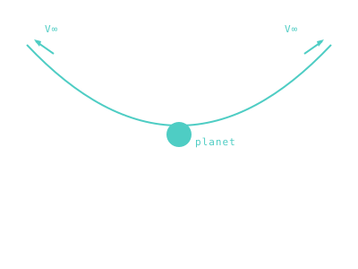

V∞ — Hyperbolic Excess Velocity
The speed you have left over once you've climbed out of a planet's gravity well — what defines a flyby's arrival energy.

101 · zoom in
C3 is what your rocket has to deliver at LAUNCH. V∞ — pronounced "v-infinity" — is the same idea, but at the OTHER end of the trip. When you arrive at Mars, how fast are you moving relative to Mars, before its gravity grabs you? That's V∞.
It matters because it sets your arrival burn. The faster you arrive, the more you have to brake to stop. Mars Reconnaissance Orbiter arrived with V∞ ≈ 2.6 km/s and burned ~1 km/s to capture into orbit. Voyager 2 reached Neptune with V∞ ≈ 8 km/s and didn't even bother trying to stop — it just flew by, snapped pictures, and continued out of the solar system forever.
The math has a beautiful symmetry: arrival V∞ at Mars is the same number you'd see if you watched Mars from a long way off and the spacecraft was on its way in. The whole journey, viewed from outside both planets' spheres of influence, becomes a clean Keplerian arc with two well-defined V∞ values — one at each end. That's the moment-of-truth number on the /fly HUD when the spacecraft crosses into the destination's gravity well.
Imagine an asymptote, infinitely far from the planet. The speed you'd be moving at on that asymptote is V∞ — pronounced 'V-infinity.' It's the Sun-relative speed minus the planet's contribution to your motion. On a hyperbolic flyby, V∞ is constant along both arms of the hyperbola.
V∞ controls how big the arrival burn has to be. To capture into orbit, you need to bleed off enough energy to drop below escape — the deeper the well, the more `∆v` it costs to slow you down. Mars Reconnaissance Orbiter arrived at Mars with V∞ ≈ 2.6 km/s, then spent ~1 km/s of `∆v` for orbit insertion. Voyager 2 reached Neptune with V∞ ≈ 8 km/s and didn't even try to insert — it just flew by.
On `/fly`'s HUD you'll see V∞ pop up when the spacecraft enters the destination's sphere of influence. It's the moment of truth: how much speed do you have to kill, and can your rocket afford to kill it?